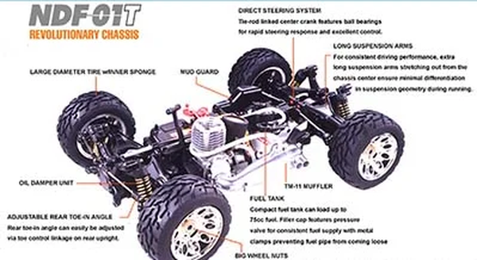

タミヤ NDF-01T Nitro Crusher

引用元画像：タミヤ公式サイト
📋 基本情報
| メーカー | タミヤ（Tamiya） |
|---|---|
| 機種名 | NDF-01T Nitro Crusher |
| 型番 | 43525 |
| 発売時期 | 2006年6月14日 |
| 生産状況 | 生産終了 |
| カテゴリー | ラジコンカー（1/10スケール エンジンRCカー） |
| サブカテゴリー | トラック/トラギー（ニトロエンジン、オフロード特化） |
📏 シャーシスペック
| シャーシ | NDF-01T |
|---|---|
| ホイールベース | 300mm（推定） |
| タイヤ | 大径110mmタイヤ（インナースポンジ入り） |
| フレーム | 強化樹脂製ロワデッキ＋ダイキャストアルミエンジンマウント |
⚙️ 駆動系
| 駆動方式 | シャフトドライブ4WD |
|---|---|
| トランスミッション | シングルスピード |
| ドライブシャフト | ユニバーサルジョイント式（前後＋プロペラシャフト） |
| ギヤボックス | 完全密閉式（前後） |
| エンジン | FS-15S（2.5cc） |
| キャブレター | スライドキャブレター |
🔧 サスペンション
| 形式 | 4輪ダブルウィッシュボーン独立懸架（ロングアーム） |
|---|---|
| ダンパー | オイルダンパー装備 |
| 特徴 | 荒れた地形でも安定した走行を実現 |
💡 特徴
エンジンRCトラックレーシング向け仕様
- NDF-01のトラック仕様バージョン（"T"はTruckの意）
- 大型ジャンプも容易にこなす高い空中安定性
- 荒れた地形も舗装路のように走破する高性能
オフロード特化設計
- 大径110mmタイヤ（インナースポンジ入り）で高い走破性
- フロントマッドガード標準装備でシャーシ内部をデブリから保護
- 十分な地上高でオフロード走行に対応
- ロングサスペンションアームで安定した走行性能
強力なFS-15Sエンジン
- 排気量2.5ccの高出力グローエンジン
- スライドキャブレター装備
- リコイルスターター標準装備で簡単エンジン始動
- スリリングなエキゾーストトーンとダイナミックな性能
優れたバランスと高出力
- 強化樹脂製ロワデッキにダイキャストアルミエンジンマウント内蔵
- エンジン、R/Cユニット、燃料タンクを中央低位置に配置
- 最適な重心配置で優れたハンドリング
- ユニバーサルジョイント式ドライブシャフトで効率的なパワー伝達
🔧 ぽすとそに工房での修理実績
修理難易度
★★★★★（非常に困難、古い情報ばかりでていて、ネットでもかなりの情報の少なさです。パーツもなかなか見当たらず整備難易度は高いです。）
よくある故障・注意点
- エンジン関連部品の経年劣化（約20年前の機種のため）
- パーツ供給が非常に限られており、修理には高度な技術が必要
- 燃料システムの劣化（タンク、チューブ類の交換が必須）
- 大径タイヤによるギヤへの負担増加
- ジャンプ着地時のシャーシダメージ（トラック仕様のため）
修理のポイント
- エンジンのオーバーホールには専門知識が必須
- パーツが入手困難なため、NDF-01（バギー版）との共通パーツを探す
- 燃料系統は定期的な交換が推奨される
- トラック用大径タイヤの代替品確保が課題
- ヤフオク等で中古パーツを探すことも必要
その他の特徴
- 完全組立済み・エンジン調整済みのRTR（Ready-To-Run）仕様
- 工場完成モデルのため初期セットアップ不要
- NDF-01バギーシリーズのトラック派生モデル
- Nitro Blaster、Thunder、Forceの兄弟機
- トラック特有の迫力あるボディデザイン